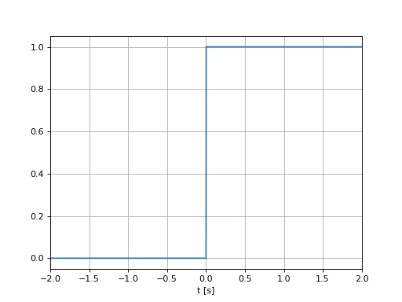
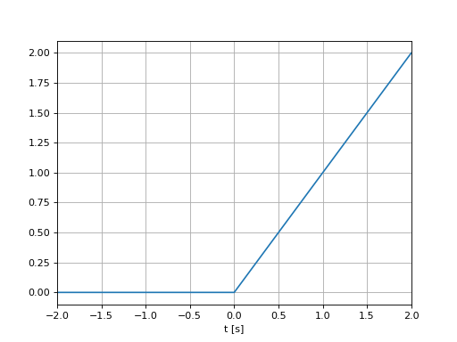
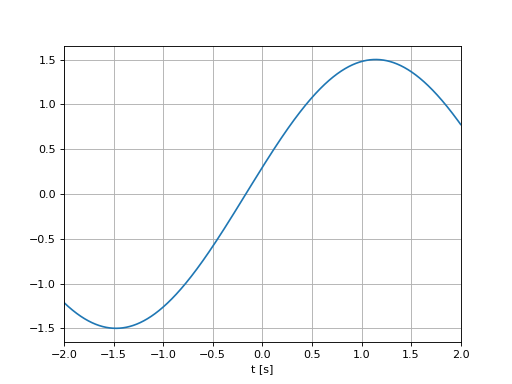
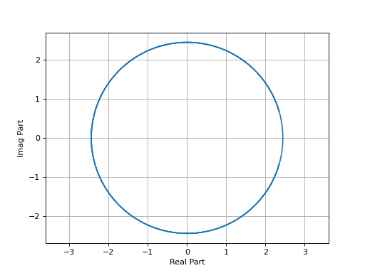
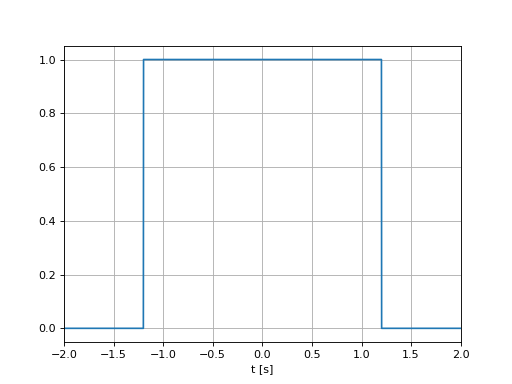
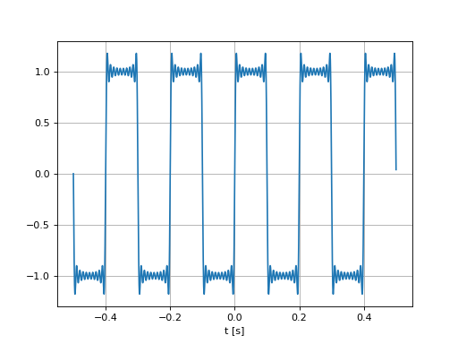

Cheatsheet¶
import numpy as np
import matplotlib.pyplot as plt
t = np.arange(-2,2,0.001)
Signaux Usuels¶
Impulsion de Dirac¶
\[\begin{split}\delta(t)=\left\{\begin{array}{cc}\infty &\text{si }t= 0\\0 &\text{ailleurs}\end{array}\right.\end{split}\]
sous la contrainte
\[\int_{-\infty}^{\infty}\delta(t)dt = 1\]
Echelon unitaire¶
\[\begin{split}u(t)=\left\{\begin{array}{cc}1 &\text{si }t\ge 0\\0 &\text{ailleurs}\end{array}\right.\end{split}\]
u = (t>=0)
plt.plot(t,u)
plt.grid()
plt.xlabel("t [s]")
plt.xlim([-2,2])

Rampe unitaire¶
\[r(t)=t u(t)\]
r = t*(t>=0)
plt.plot(t,r)
plt.grid()
plt.xlabel("t [s]")
plt.xlim([-2,2])

Sinsusoide¶
\[x(t)=a \sin(\omega_0 t+\varphi)\]
\(\omega_0\): pulsation (rad/s),
\(a\): amplitude (crète),
\(\varphi\): déphasage.
w0,a,varphi = 1.2,1.5,0.2
x = a*np.sin(w0*t+varphi)
plt.plot(t,x)
plt.grid()
plt.xlabel("t [s]")
plt.xlim([-2,2])

Exponentielle Complexe¶
\[z(t)=a e^{j\omega t+\varphi}\]
\(\omega_0\): pulsation (rad/s),
\(a\): amplitude (crète),
\(\varphi\): déphasage.
w0,a,varphi = 3,2,0.2
z = a*np.exp(1j*w0*t+varphi)
plt.plot(np.real(z),np.imag(z))
plt.grid()
plt.xlabel("Real Part")
plt.ylabel("Imag Part")
plt.axis("equal")
plt.xlim([-2,2])

Porte rectangulaire¶
\[\begin{split}\Pi_L(t)=\left\{\begin{array}{cc}1 &\text{si }|t| <\frac{L}{2}\\0 &\text{ailleurs}\end{array}\right.\end{split}\]
\(L\): largeur de la porte.
L=1.2
p = np.abs(t)< L
plt.plot(t,p)
plt.grid()
plt.xlabel("t [s]")
plt.xlim([-2,2])

Séries de Fourier¶
class Fourier_Synth():
def __init__(self, f0):
self.f0 = f0
def get_c(self, n):
if (n%2)==0:
c_n = 0
else:
c_n = 2/(1j*np.pi*n)
return c_n
def generate(self, t, L=10):
x = np.zeros(len(t),dtype=complex)
for n in range(-L,L+1):
cn = self.get_c(n)
x += cn*np.exp(2j*np.pi*n*self.f0*t)
return x
t = np.arange(-0.5,0.5,0.0001)
sig = Fourier_Synth(5)
x = sig.generate(t, L=20)
plt.plot(t,x)
plt.grid()
plt.xlabel("t [s]")
